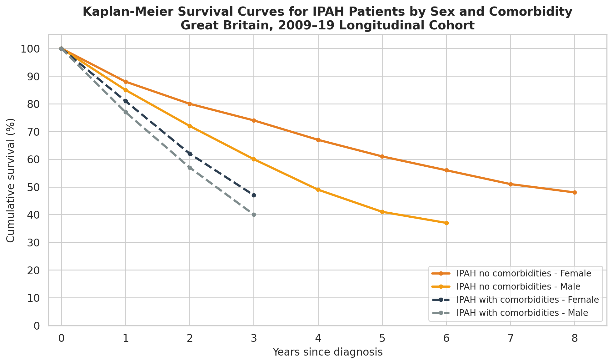
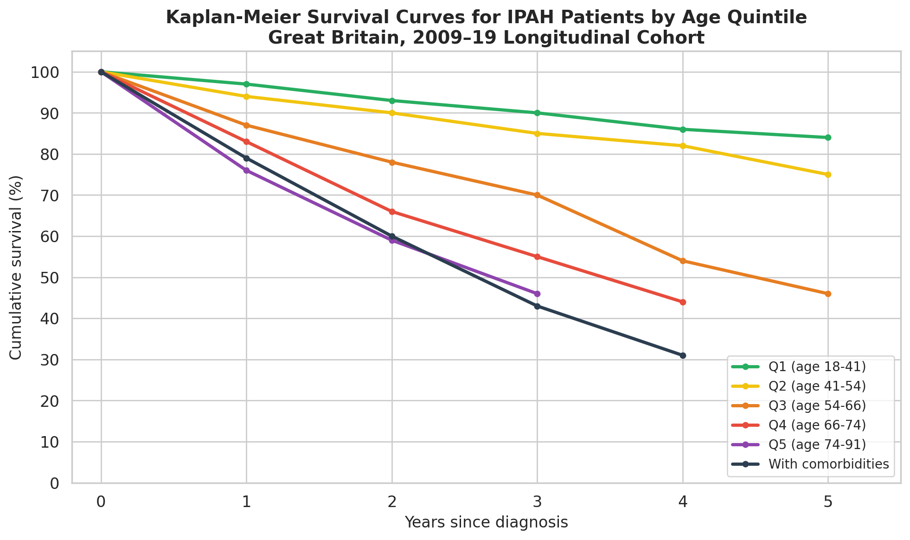
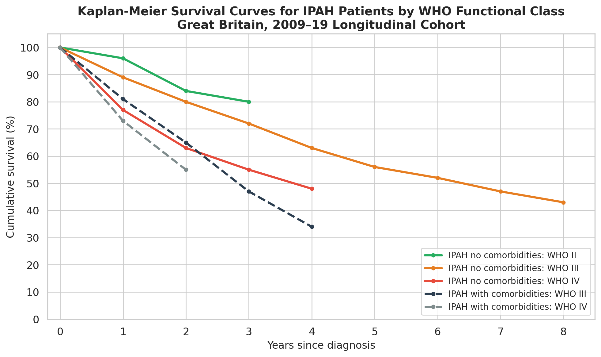
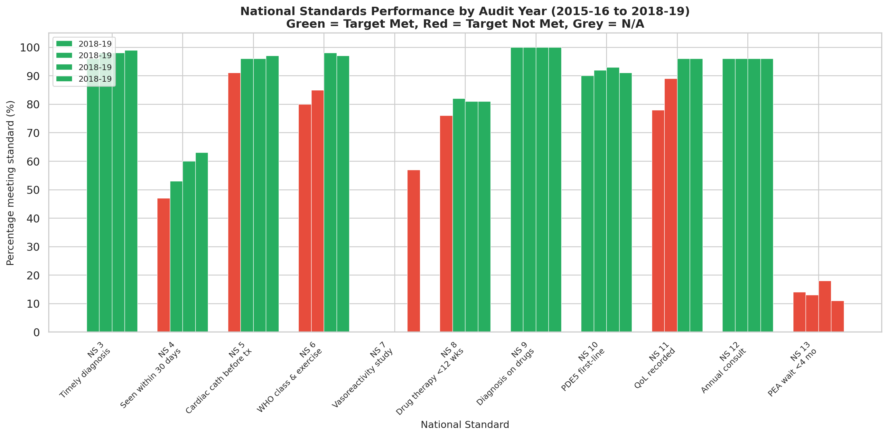
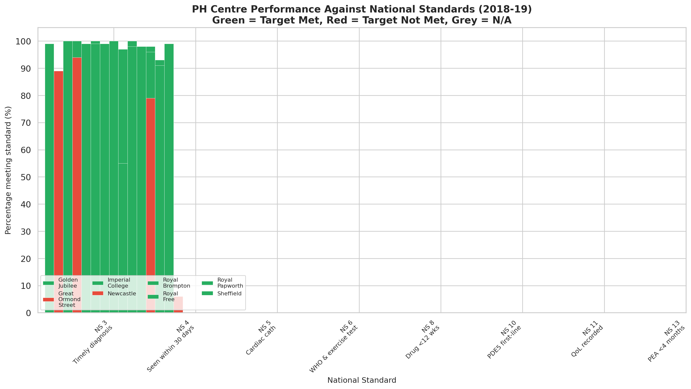
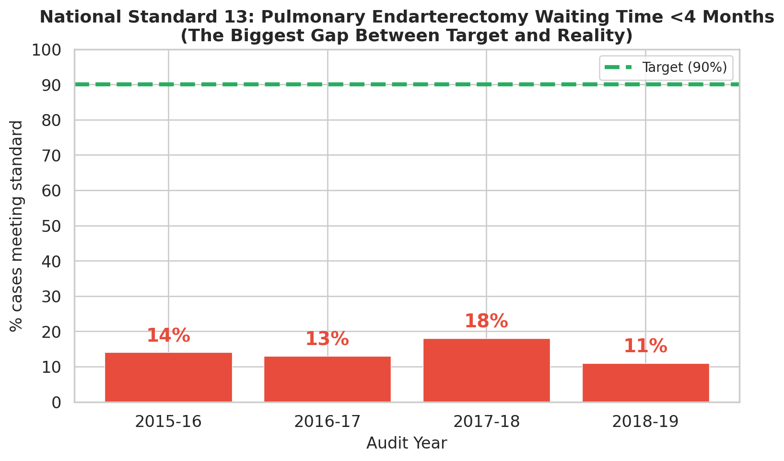
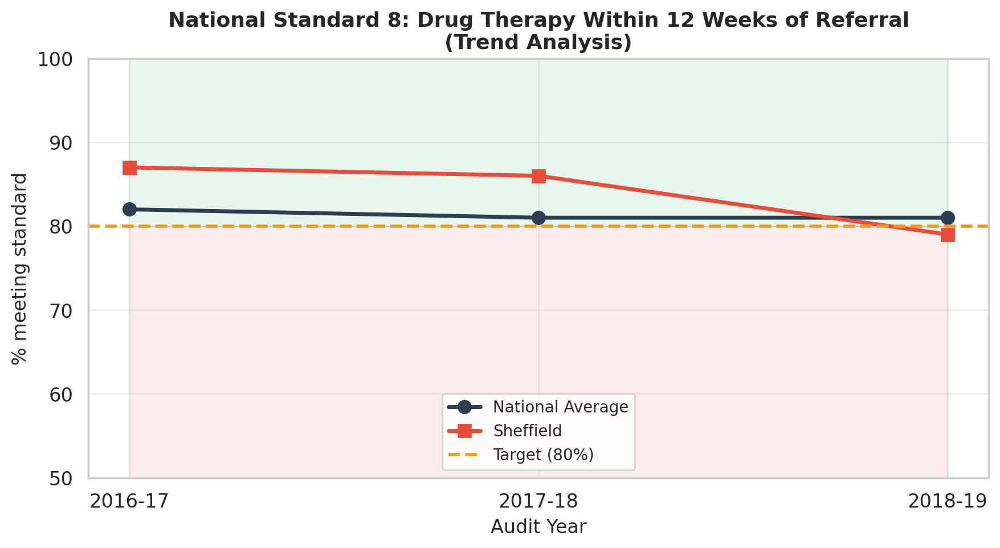

Pulmonary Hypertension Care Quality in Great Britain (2018–19)
The longitudinal cohort tracks adult patients whose first referral was on or after 1 April 2009, providing 23,311 patient records spanning ten years of prospective data collection. Across this cohort, cumulative survival drops steadily: approximately 85% at one year post-diagnosis, 75% at two years, 60% at three years, 50% at four years, and 45% at five years. By definition, the survival curves are stopped when the remaining patient count falls below 50, so longer-term estimates carry wider uncertainty.
Female patients without comorbidities demonstrate superior long-term survival, reaching 48% at eight years (Figure 1). Male patients with comorbidities experience the steepest decline, reaching 40% by approximately three years. The curve for males without comorbidities falls between these extremes at 36% by six years.
The most pronounced survival disparity exists between women and men with IPAH without comorbidities. Women diagnosed in this group maintain an average of seven years and 77 days to reach median mortality, compared to just three years and 279 days for men — a difference of roughly four years. These results are striking because baseline haemodynamic parameters are remarkably similar: mean pulmonary artery pressure averages 52.3 mmHg for women and 49.2 mmHg for men, and WHO functional class III represents 71% of women versus 74% of men.
Patients with comorbidities face dramatically worse survival regardless of sex. For women with comorbid IPAH, cumulative survival reaches 40% by 3.5 years; for men with comorbid IPAH, it reaches 40% by 3 years.

Age at diagnosis is perhaps the strongest predictor of survival trajectory. Five age-based quintiles show monotonic declines across all follow-up intervals:
| Quintile | Age Range | Median Age | % Female | 3-Year Survival | 5-Year Survival | Days to 50% Mortality |
|---|---|---|---|---|---|---|
| Q1 | 18–41 | 32 | 76% | 90% | 84% | >6 years (not reached) |
| Q2 | 41–54 | 47 | 72% | 85% | 75% | >6 years (not reached) |
| Q3 | 54–66 | 60 | 64% | 70% | 46% | 4 yrs + 127 days |
| Q4 | 66–74 | 70 | 56% | 55% | — | 3 yrs + 203 days |
| Q5 | 74–91 | 78 | 59% | 46% | — | 2 yrs + 291 days |
| With comorbidities (all ages) | — | 53% | 43% | 25% | 2 yrs + 218 days | |
The progression from Q1 to Q5 shows that each increment in median age at diagnosis reduces five-year survival by approximately 10 percentage points within the "no comorbidities" population. Patients in the youngest quintile maintain 84% survival at five years. By contrast, patients with comorbidities span all age ranges but tend toward older diagnoses (median age 70) and drop to 25% survival at five years.

Among patients with IPAH without comorbidities, WHO functional class at diagnosis provides the best short-term prognostic signal:
For patients with comorbidities, WHO class III shows 50% survival at 3 years falling to 34% by 4 years. WHO class IV with comorbidities lacks sufficient sample size (only 106 patients) beyond 2 years (~55%).

At a national aggregate level, the audit demonstrates strong performance across most clinical indicators. Table 1 summarises trends from 2015–16 through 2018–19.
| Standard | Description | Target | 2015-16 | 2016-17 | 2017-18 | 2018-19 | Trend |
|---|---|---|---|---|---|---|---|
| NS 1 | Centre participation | All centres | 7/8 | 8/8 | 8/8 | 8/8 | Steady — |
| NS 2 | Sufficient caseload (300+) | 300 pts | 7/7 | 8/8 | 8/8 | 8/8 | Steady — |
| NS 3 | Timely diagnosis | 95% | 96% | 98% | 98% | 99% | Up ▲ |
| NS 4 | Seen within 30 days | 50% | 47% | 53% | 60% | 63% | Up ▲ |
| NS 5 | Cardiac cath before tx | 95% | 91% | 96% | 96% | 97% | Steady — |
| NS 6 | WHO class & exercise test | 90% | 80% | 85% | 98% | 97% | Steady — |
| NS 7 | Vasoreactivity study | 80% | — | — | — | 57% | New |
| NS 8 | Drug therapy <12 weeks | 80% | 76% | 82% | 81% | 81% | Steady — |
| NS 9 | Diagnosis on drug record | 99% | 100% | 100% | 100% | 100% | Steady — |
| NS 10 | PDE5 first-line therapy | 80% | 90% | 92% | 93% | 91% | Steady — |
| NS 11 | Quality of life recorded | 90% | 78% | 89% | 96% | 96% | Steady — |
| NS 12 | Annual consultation | 90% | 96% | 96% | 96% | 96% | Steady — |
| NS 13 | PEA wait <4 months | 90% | 14% | 13% | 18% | 11% | Steady — |
Table 1. National Standards performance across four audit years (2015–16 to 2018–19). Green = target met; red = target not met.

In 2018–19, no centre failed every standard, but every centre missed at least one (Table 2):
| Standard | Target | GJ | GOS | Imp | NSW | RBH | RF | RPW | Shef |
|---|---|---|---|---|---|---|---|---|---|
| NS 3 | 95% | 99% | 89% | 100% | 94% | 99% | 99% | 99% | 100% |
| NS 4 | 50% | 74% | 100% | 62% | 78% | 57% | 75% | 53% | 55% |
| NS 5 | 95% | 99% | N/A | 92% | 100% | 97% | 97% | 97% | 98% |
| NS 6 | 90% | 100% | N/A | 92% | 94% | 96% | 97% | 94% | 98% |
| NS 8 | 80% | 61% | N/A | 89% | 91% | 88% | 87% | 75% | 79% |
| NS 10 | 80% | 89% | N/A | 100% | 86% | 84% | 95% | 96% | 91% |
| NS 11 | 90% | 94% | N/A | 95% | 100% | 93% | 98% | 93% | 99% |
| NS 13 | 90% | 23% | N/A | 10% | 0% | 0% | 0% | 23% | 6% |
Table 2. Centre-level performance against key National Standards (2018–19). Abbreviations: GJ = Golden Jubilee, GOS = Great Ormond Street, Imp = Imperial College, NSW = Newcastle, RBH = Royal Brompton, RF = Royal Free, RPW = Royal Papworth, Shef = Sheffield.
Royal Papworth Hospital achieved 23% compliance with NS 13 — tied with Golden Jubilee for the highest rate. However, Royal Papworth also scored lowest at 75% on NS 8 (drug therapy within 12 weeks), confirming that its high diagnostic volume creates bottlenecks elsewhere in the pathway.


Five of the eight specialist PH centres submitted Local Action Plan documents: Sheffield, Royal Brompton, Newcastle, Imperial College, and Golden Jubilee. Together, these cover four distinct standards (Table 3):
| Standard | Golden Jubilee | Imperial College | Newcastle | Royal Brompton | Sheffield |
|---|---|---|---|---|---|
| NS 3 - Timely diagnosis | ✔ | ||||
| NS 5 - Cardiac cath | ✔ | ||||
| NS 8 - Drug <12 weeks | ✔ | ✔ | |||
| NS 13 - PEA <4 months | ✔ | ✔ | ✔ | ✔ | ✔ |
Table 3. Local Action Plan coverage across the five submitted documents (✔ = documented; blank = not addressed in LAP).
All five LAP documents reference Royal Papworth Hospital's role in pulmonary endarterectomy. Sheffield has appointed an additional secretary to reduce administrative delays and dedicated nursing staff to monitor the pathway, while examining improvements to coronary angiography waiting times. Royal Brompton aims to adopt a proposed virtual MDT with Royal Papworth to shorten decision timelines.
Two centres explicitly link staffing shortages to Standard 8 failures. Sheffield reported declining performance (87% in 2016–17 to 79% in 2018–19) and committed to hiring a dedicated tracking member plus appointing an additional medical consultant in October 2019. Golden Jubilee aims to increase right heart catheterisation throughput and expresses optimism about meeting the standard by the 11th report cycle.

Imperial College identified a documentation error rather than a clinical gap: patients had undergone cardiac catheterization performed externally, but records were missing from the NAPH database. Quarterly reviews are planned to catch discrepancies closer to entry date. If confirmed, the true NS 5 compliance may already exceed 95%.
Newcastle (Freeman Hospital) implemented monitoring of new patient activity to ensure diagnoses are recorded within the recognised timeframe. This is the only centre to submit a standalone LAP addressing Standard 3, despite 94% performance falling below the 95% target.
The submitted LAP documents exhibit notable gaps. Great Ormond Street (children's centre) did not submit a LAP document. Several centres that underperformed did not submit LAPs addressing their primary shortcomings. This inconsistent engagement limits the Audit's ability to drive measurable improvement at the centre level.
Patients with IPAH without comorbidities receive more intensive combination therapy than those with comorbidities (Table 4):
| Group | Total | Mono-therapy | Dual therapy | No therapy | |
|---|---|---|---|---|---|
| Females (no comorbidities) | 740 | 33% | 52% | 12% | 3% |
| Males (no comorbidities) | 392 | 38% | 49% | 9% | 4% |
| Females (with comorbidities) | 204 | 55% | 41% | 2% | 2% |
| Males (with comorbidities) | 181 | 56% | 42% | 1% | 1% |
Table 4. Latest recorded therapy type by sex and IPAH type (2009–19 longitudinal cohort).
Patients with comorbidities receive predominantly mono-therapy (55–56%), likely because underlying conditions complicate PAH-directed decisions. Conversely, 64% of women without comorbidities receive dual or triple therapy.
Nationally, 91% of patients initiate PDE5 inhibitor therapy as first-line treatment, exceeding the 80% target (up from 90% in 2015–16). At the centre level, Imperial College achieves 100%, while Royal Brompton lags at 84%.
Patients entering the longitudinal cohort present with characteristic pre-capillary pulmonary hypertension profiles (Table 5):
| Parameter | Normal range | F (no comorbid.) | M (no comorbid.) | F (comorbid.) | M (comorbid.) |
|---|---|---|---|---|---|
| Mean PAP (mmHg) | <14 / >25 (PH) | 52.3 ± 13.1 | 49.2 ± 11.8 | 51.7 ± 10.1 | 49.2 ± 9.1 |
| Mean PWP (mmHg) | <8 | 9.7 ± 4.5 | 10.1 ± 4.8 | 12.3 ± 5.3 | 11.8 ± 4.7 |
| Mean RAP (mmHg) | 0–7 | 10.0 ± 5.8 | 9.4 ± 5.4 | 12.3 ± 6.0 | 12.1 ± 6.0 |
| PVR (Wood units) | 2.5–4.2 | 12.6 ± 6.3 | 10.3 ± 4.6 | 11.2 ± 5.4 | 9.5 ± 3.9 |
| 6-min walk (m) | — | 247 ± 151 | 230 ± 152 | — | — |
| emPHasis-10 | 0 (best)–50 (worst) | 29.1 ± 13.5 | 30.1 ± 12.9 | 31.8 ± 11.3 | — |
| Cardiac index (L/min/m²) | 2.5–4.2 | 2.2 ± 0.8 | 2.2 ± 0.7 | 2.3 ± 0.8 | 2.2 ± 0.6 |
| TLco (% predicted) | 65–75 | 56 ± 20 | 51 ± 22 | 36 ± 20 | 36 ± 15 |
Table 5. Key haemodynamic and functional parameters by sex and IPAH type. — = Insufficient values <50 patients.
These values cluster consistently across sexes in non-comorbidity groups. Patients with comorbidities show substantially lower lung function: TLco averages 36% predicted versus 51–56% predicted for those without comorbidities.
PEA capacity expansion is the highest-impact intervention needed. The 79-percentage-point gap between actual performance (11%) and the 90% target for Standard 13 demands coordinated investment in surgical slots at Royal Papworth, streamlined pre-operative pathways, and potentially expanding PEA capability to additional centres.
Drug therapy initiation bottlenecks at Sheffield and Golden Jubilee need targeted resources. Right heart catheterisation throughput should be increased at both centres. Sheffield has committed to adding a consultant in October 2019.
The vasoreactivity study standard (NS 7) requires new documentation protocols. At 57% versus 80% target, this newly introduced standard reveals a systematic recording gap. Centres must determine whether testing occurs but results are not captured in NAPH.
Age-stratified risk communication. A 32-year-old woman with IPAH without comorbidities has a vastly different prognosis than a 78-year-old man with comorbid IPAH. PH centres should develop personalised prognosis discussions using these validated predictors.
Comorbidity management integration. Patients with comorbidities consistently underperform on survival metrics and receive less intensive PAH-specific therapy. Multi-disciplinary approaches addressing concurrent cardiac and respiratory conditions could improve outcomes.
Broaden LAP submission coverage. Only five of eight centres submitted LAP documents covering at most two standards each. Mandating broader LAP participation would strengthen the feedback loop between audit findings and improvement.
This analysis draws from three categories of source material published alongside the NAPH 10th Annual Report (NHS Digital, commissioned by NHS England, 24 October 2019):
Charts were generated using Python (matplotlib, seaborn). Survival curve data reproduced directly from the supplementary report. All percentages reflect official NAPH tables, rounded per Audit convention (nearest whole number).